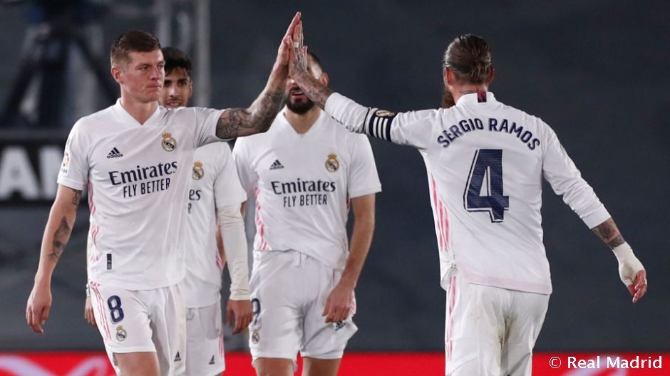
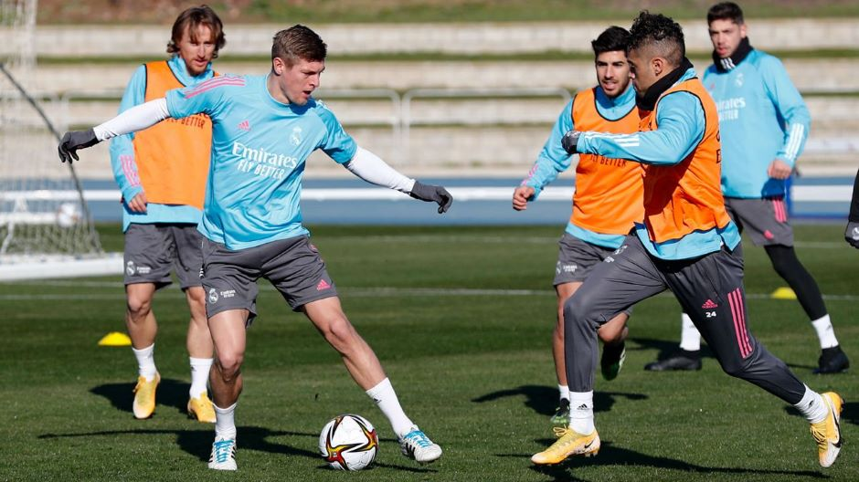
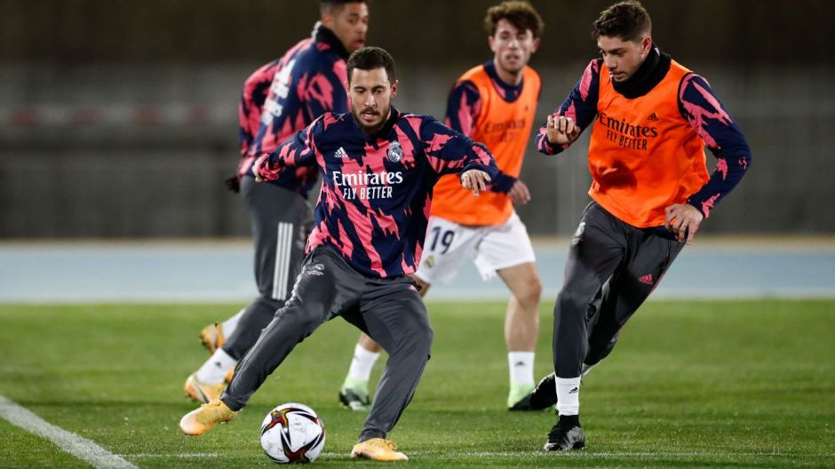
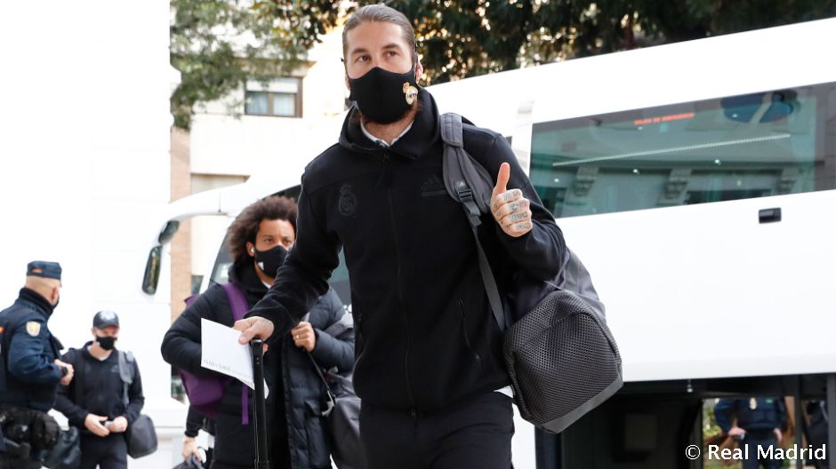
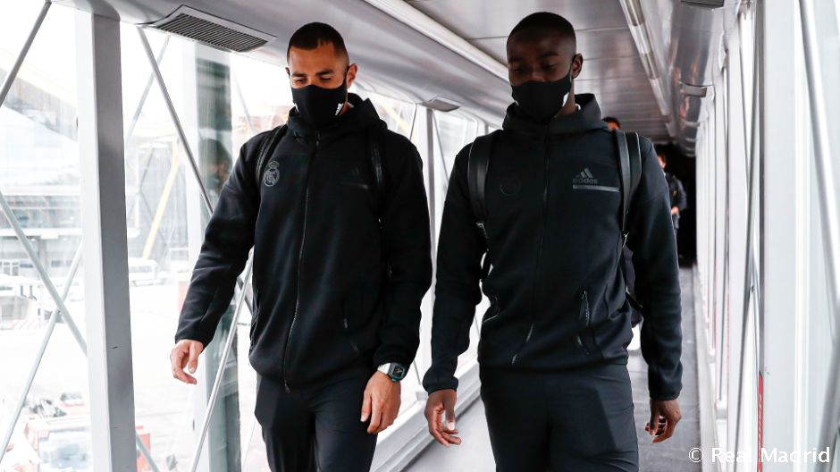
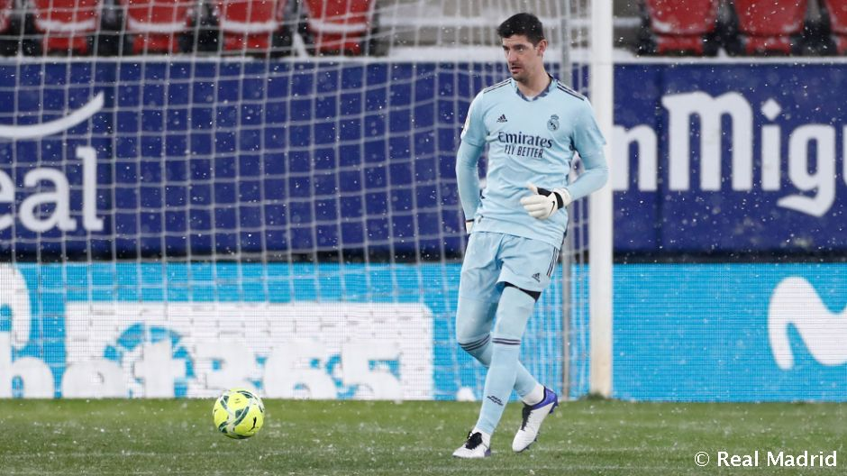
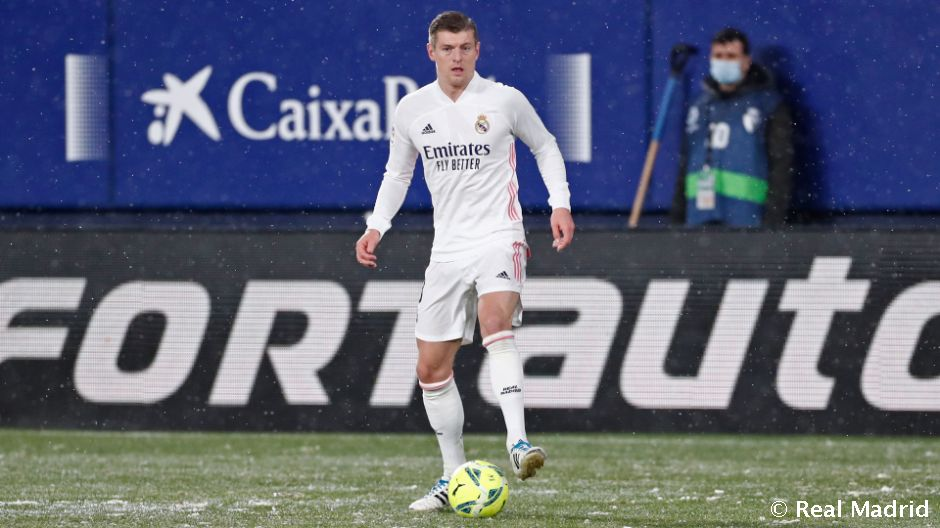
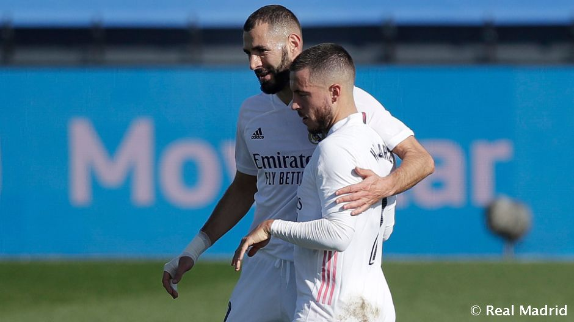

REAL MADRID'S GOAL SCORERS IN THE SPANISH SUPER CUP
Ramos, Benzema, Asensio, Kroos, Modric and Isco have all...
Ramos, Benzema, Asensio, Kroos, Modric and Isco have all...

THE TEAM CONTINUE THEIR PREPARATIONS IN MALAGA AHEAD OF SPANISH SUPER CUP SEMI-FINAL
Real Madrid take on Athletic Club at La Rosaleda...
Real Madrid take on Athletic Club at La Rosaleda...

FIRST SESSION IN MALAGA AHEAD OF SPANISH SUPER CUP SEMI
The team face Athletic in Thursday's semi-fina(9pm CET)...
The team face Athletic in Thursday's semi-fina(9pm CET)...

REAL MADRID'S ARRIVAL IN MALAGA
The team flew from Pamplina to Andalusian city, where they will play the semi-final of the Spanish Super Cup (Thursday...
The team flew from Pamplina to Andalusian city, where they will play the semi-final of the Spanish Super Cup (Thursday...

REAL MADRID WILL TRAVEL FROM PMAPLONA TO MALAGA TOMORROW
The team will fly directly to the city where they will play the Super Cup semi-final on Thursday ...
The team will fly directly to the city where they will play the Super Cup semi-final on Thursday ...

COURTOIS:"THERE ARE STILL LOTS OF POINTS TO PLAY FOR, WE HAVE TO KEEP GOING
"There wasnt much space but we kept a clean sheet and picked up a point", he added...
"There wasnt much space but we kept a clean sheet and picked up a point", he added...

KROOS MAKES HIS 300TH REAL MADRID APPEARANCE
"We controlled the game but lacked that bit extra up top to take the win", said the German Toni Kroos continues to add to his Real Madrid numbers...
"We controlled the game but lacked that bit extra up top to take the win", said the German Toni Kroos continues to add to his Real Madrid numbers...

REAL MADRID STARTING LINE-UP AGAINST OSASUNA
The Whites' team is: Courtois, Sergio Ramos, R. Varane, Hazard, Kroos, Benzema, Modric, Asension, Casemiro, Lucas V. and F. Mendy...
The Whites' team is: Courtois, Sergio Ramos, R. Varane, Hazard, Kroos, Benzema, Modric, Asension, Casemiro, Lucas V. and F. Mendy...